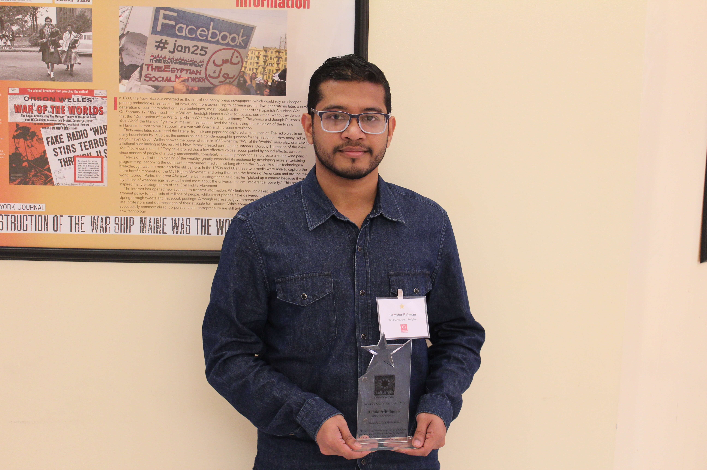
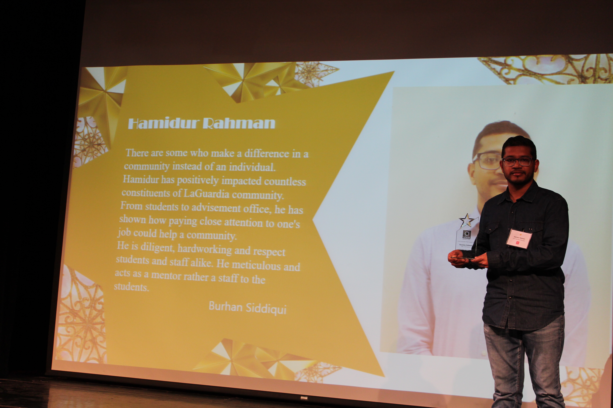

"Into a race to build something meaningful, new and useful for others." - Hamidur Rahman
"Prove yourself by doing it, right things will find its way to you."
 
I am really passionate about building/working with large scale application in Java. To build something big big, useful and that can make impact, lots of tools are necessary. That's when framework like Spring and Hibernate (for Database) comes into play. To stand aside from others I have learned applicable knowledge of these and have built programs to demonstrate the skills. All programs are available in my GitHub account.
Beside this, in my spare time I like to watch movies/tv shows, listen to music, watch sports or take a long drive.
Webcrawler
A fully functional WebCrawler developed in Java with Servlet, JSP and MySQL. This project is a
'Search And Reporting Application' (SARA) - an application takes a base url to start crawling, retrieve
and persist data as well as queries can be performed on above retrieved data. An Admin is able
to specify how many links should be crawled from the given link and depth of search for each link.
Key points of this project -
- Session Management (for Admin)
- Some endpoints are restricted and not accessible to everyone
- Log all activities in database
Spring Boot RESTful Webservices
A fully responsive Spring Boot CRUD RESTful webservice project. This project was to demonstrate the ability to use frameworks and build RESTful webservices to serve as a REST API with some endpoints. It works with all popular http method GET, POST, PUT, DELETE. For data transfer format produces and consumes JSON object. Goals for this project -
- Take advantage of Spring Data JPA
- Use Jackson to bind data
- Usage of Hibernate
CUNYfirst
A complete functional web based school management application. This application has three main component.
- Administration - to add a student etc. (admin related stuff)
- Student - a user
- Instructor - a user with some privileges
- Demonstration of MVC pattern
- Retrieve resources from database as per request instead of a bulk request
- Bring some Spring Framework's module into play